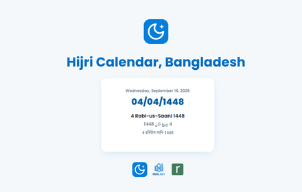
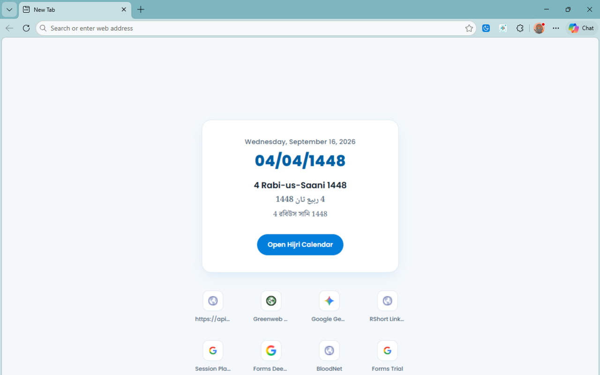
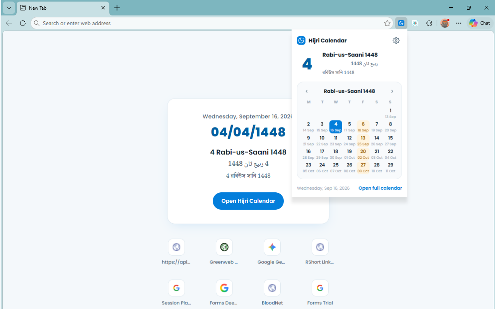
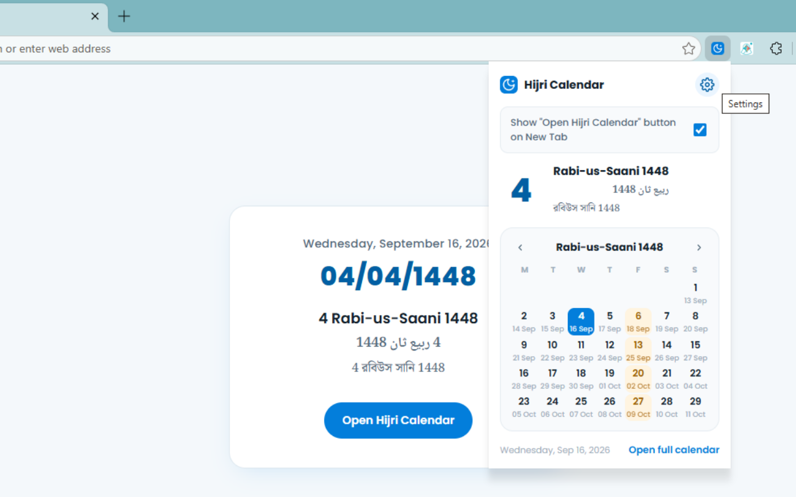

Hijri Calendar
Default calendar for Bangladesh
Hijri date on every new tab
Install the Hijri Calendar, Bangladesh extension in Microsoft Edge, Chrome, Brave, Opera or any other Chromium browser. Your new tab shows today's Hijri date, and the toolbar icon opens the full month - all following the Islamic Foundation, Bangladesh announcements.

Our listing is currently under review on the Microsoft Edge Add-ons store. Until it is approved, please use the ZIP download and the short guide below.
What it does
New tab date card
Every new tab opens with today's numeric Hijri date and the month name in English, Arabic and Bengali.
Toolbar month view
Click the toolbar icon for a compact month grid with the Gregorian date under each Hijri day.
Stays in sync
Month start dates are read from hijri.iiuc.net, so new moon-sighting announcements arrive automatically.
Light and private
No account, no advertising, no browsing data collected. It only reads the public calendar data file.
Screenshots



How to install the ZIP
The extension is not on the Edge Add-ons store yet, so it has to be loaded as an unpacked extension. It takes about a minute and works the same way in Edge, Chrome, Brave and Opera.
-
Download the ZIP. Use the Download ZIP button above to save
hijri-edge-extension.zipto your computer. -
Unzip it. Right-click the file and choose Extract All on Windows,
or double-click it on macOS. Keep the extracted folder somewhere permanent such as
Documents- if you delete or move it later, the extension stops working. -
Open the extensions page. In Edge go to
edge://extensions. In Chrome, Brave or Opera go tochrome://extensions. - Turn on Developer mode. The toggle sits in the left sidebar in Edge and in the top-right corner in Chrome.
-
Load the folder. Click Load unpacked and select the folder you
extracted - the one that contains
manifest.json. Do not select the ZIP file itself. - Open a new tab. The Hijri date card appears right away. Pin the extension from the toolbar puzzle icon to keep the month view one click away.
Your browser may show a reminder that developer-mode extensions are running. That is normal for unpacked extensions and it will go away once our store listing is approved and you install from Edge Add-ons instead.
Common questions
Will it work in Chrome, Brave or Opera?
Yes. It is a standard Chromium extension, so it loads the same way in Edge, Chrome, Brave, Opera, Vivaldi and other Chromium-based browsers. It does not work in Firefox or Safari.
Why must I keep the extracted folder?
Unpacked extensions run directly from that folder on disk. If it is deleted or renamed, the browser disables the extension. Keeping it in a stable location avoids that.
Does it replace my new tab page?
It adds the Hijri date card to the new tab. Your browser may ask you to confirm the change the first time, and you can revert it at any point by removing the extension.
How do I update it later?
Download the newest ZIP from this page, extract it over the old folder, then click the refresh icon on the extension card in the extensions page. Once the store listing is live, updates will install automatically.
Is there something for Windows outside the browser?
Yes - HijriTray puts the Hijri date in your Windows system tray, no browser needed.